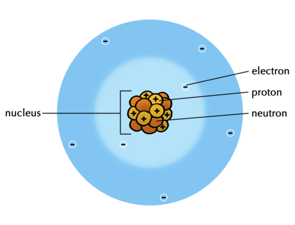

This chapter starts with a review of the main concepts surrounding Compounds, covered in Gr. 8 Matter and Materials.
This is followed by a section on the Periodic Table, first introduced in Gr. 7 Matter and Materials.
New information includes the terms Group and Period and the observation that elements from the same group exhibit similar chemical behaviour. You could discuss the Periodic Table being a classification table of the elements; an organising framework which helps us understand their properties, and their similarities and differences. Learners will be exposed to different formats of the Periodic Table. The idea is that learners should realise that information on the table can be added or taken away, depending on the purpose for which it will be used. This does not, however, alter the positions of the elements on the table, which are fixed.
It is an expectation of CAPS that learners should know the names and formulae of the first 20 elements on the table (as well as Fe, Cu and Zn). CAPS does not require that learners memorise the atomic number of each element, which would
imply that the exact position of each of the 20 elements on the table is not examinable.
An important issue to note is that, according to CAPS: "each element on the Periodic Table (in its own block) has an atomic number (smaller number), mass number (larger number), name and symbol". This statement is not entirely correct. The larger number usually indicated on the table is NOT the mass number (defined as the sum of the number of protons and the number of neutrons), but rather the average atomic mass (this number is usually rounded to the nearest whole number, or to one decimal place). To understand the subtle but significant difference between mass number and average atomic mass, we need to provide some background: At this point the learners are under the impression that all atoms of a given element are identical. This is not strictly true. All elements exist as two or more isotopes. Isotopes are variants of a particular chemical element: while all isotopes
of
a given element share the same number of protons and electrons, each isotope differs from the others in its number of neutrons. Hence, it would not make sense to indicate the mass number on the table, as the mass number is different for each different isotope of a chemical element. The average atomic mass is a number that takes into account the masses of all the different isotopes of a given element AND the proportion in which each is found in the natural state of that element. The reason why it is important not to conflate the two concepts, mass number and average atomic mass, is because this manifests as a misconception at the higher levels, when it becomes important for learners to know the difference between them. In the text below, we will be using the term 'atomic mass' instead of 'mass number', because it is a more correct description of the 'larger number' that usually appears on the Periodic Table.
In the final section of the chapter we return to chemical formulae, which received perfunctory treatment in Gr. 8 Matter and Materials (Atoms).
We have once again included many 'sub-microscopic' diagrams to help learners imagine the small entities dealt with in this chapter. Learners will almost certainly need help switching between the symbolic (formulae) and sub-microscopic (molecular diagrams) representations. This is a very important skill that should receive careful attention at this point, as it will improve learners' chances of mastering the complexities of the subject at the higher levels. We have once again included activities where learners have to construct molecules using plasticine or play dough, to reinforce this skill.
The Play dough recipe provided in Gr. 8 Matter and Materials, is included here for easy reference.
Play dough recipe
INGREDIENTS:
2 cups flour
2 cups warm water
1 cup salt
2 tablespoons vegetable oil
1 tablespoon cream of tartar (optional for improved elasticity)
food colouring in different colours
METHOD:
Mix all of the ingredients together, and stir over low heat. The dough will begin to thicken until it resembles mashed potatoes.
When the dough pulls away from the sides and clumps in the centre, remove the pan from the heat and allow the dough to cool enough to handle. Note: If the dough is still sticky, it simply needs to be cooked for longer.
Turn the dough out onto a clean surface and knead until smooth. Divide the dough into balls for colouring.
Make a small depression in the centre of the ball, and pour some food colouring into it. Work the colour through the dough, adding more if you want a more intense colour.
1.1 Elements and compounds (0.5 hours)
Tasks
Skills
Recommendation
Activity: Writing formulae and revision
Writing symbols/formulae, interpreting diagram
Optional (Revision)
1.2 The Periodic Table (1 hour)
Tasks
Skills
Recommendation
Activity: Elements on the Periodic Table
Memorising names and symbols of the first 20 elements
CAPS suggested
1.3 Names of compounds (1.5 hours)
Tasks
Skills
Recommendation
Activity: Naming compounds of metals and non-metals
Interpreting, writing names
CAPS suggested
Activity: Writing names from the formulae of compounds
Interpreting, naming compounds, building models, drawing
CAPS suggested
Activity: Writing formulae from the names of compounds
Interpreting, writing formulae, building models, drawing
CAPS suggested
What is a compound?
How is a compound different from an element?
How is a mixture of elements different from a compound?
What does the position of an element on the Periodic Table tell us about its properties?
Where do we find metals, non-metals and semi-metals on the Periodic Table?
What are the vertical columns of the Periodic Table called?
What are the horizontal rows of the Periodic Table called?
What do elements belonging to the same 'group' of the Periodic Table have in common?
What additional information about an element can we find on the Periodic Table?
What does the formula of a compound tell us about it?
Elements and compounds
compound
crystal lattice
element
diatomic
molecule
This first section is a revision of what learners should have covered in previous grades. It spans several pages, but it is mostly revision and has been included as a reference for learners. You will need to decide, based on your class, about how much time you need to dedicate revising these topics, or whether you get your learners to read over the content and complete the activity at the end.
Can you remember learning about compounds in Gr. 8 Matter and Materials? We will start this chapter by summarising and revising some of the main ideas about elements and compounds from Gr. 7 and 8. This should help us to link the new ideas in this chapter to what we already know.
The particles that make up compounds
Learners need to be made aware that compounds may occur as two types of structures, namely molecules and lattices:
When a compound is made up entirely of non-metals (CO2, H2O, or NH3, for example), the smallest unit of that compound will be a molecule.
However, when a compound is made up of a metal and a non-metal (NaCl, or CuO, for instance), the type of bonding in the compound is different. During bonding, the metal and non-metal atoms exchange electrons to form ions. Due to opposite charges attracting, these ions pack together in vast three-dimensional crystals or lattices, rather than forming simple molecules.
In this section we have included a brief mention of crystal lattices to avoid the misconception later that NaCl and other ionic compounds consist of molecules. Learners should know that NaCl, for instance, consists of a regular arrangement of sodium and chloride atoms combined in a 1:1 ratio, packed to form a crystal structure.
The particles of a compound always consist of two or more atoms. In Physical Sciences Gr. 10 you will learn that these atoms combine in different ways. In some cases they can form molecules. You may remember that 'molecule'is the word scientists use for a cluster of atoms that stick together in a specific way. Other compounds consist of atoms which are arranged in a regular pattern called a crystal lattice.
The molecules of a compound always consist of two or more different kindsof atoms, like the molecules of water in the following diagram.
Water molecules.
Compounds that form crystal lattices consist of many atoms, but they always combine in a fixed ratio. For example, in sodium chloride (table salt), there is one chlorine atom for every sodium atom in the crystal. The smallest 'unit' that is repeated in the crystal consists of one Na and one Cl. The formula NaCl represents one 'formula unit' of NaCl.
A sodium chloride crystal lattice consisting of sodium (purple) and chloride (green) atoms in a fixed ratio.
From the diagram of the water molecules and the sodium chloride lattice above, we can see that a compound is not simply a mixture of elements. A mixture of the elements hydrogen and oxygen would look like this:
A mixture of hydrogen and oxygen molecules.
Why are the hydrogen and oxygen atoms paired in the diagram above? Before we answer that question, here is an important reminder: Elements are made up of just one kind of atom.
Some elements exist as diatomic molecules, like the ones in the diagram on the right below and the hydrogen and oxygen molecules in the 'mixture' diagram above. The most important examples of diatomic molecules are H2, N2, O2, F2, Cl2, Br2, and I2. Diatomic means 'consisting of two atoms'.
Some elements exist as diatomic molecules.
Can you see that the water molecules in the diagram above are all identical? That brings us to the next point about compounds.
The atoms in molecules and lattices are combined in a fixed ratio
In water, for example, one oxygen atom (O) has combined with two hydrogen atoms (H). All water molecules are exactly the same in this respect.
All water molecules consist of one O atom and two H atoms and this gives water its specific properties.
Any other combination of hydrogen and oxygen atoms would NOT be water. For example, hydrogen peroxide consists of the same elements as water (hydrogen and oxygen) but the ratio is different: two oxygen atoms have combined with two hydrogen atoms.
The hydrogen peroxide molecule consists of two O atoms and two H atoms. This gives hydrogen peroxide different properties to water.In the crystal lattice of black iron oxide, there is one iron (Fe) atom for every oxygen (O) atom.
The next important point about compounds is the following.
Each compound has a unique name and formula
Water can be represented by the formula H2O. The formula tells us that two hydrogen atoms (H) are combined with one oxygen atom (O) in a molecule of water.
What is the formula of hydrogen peroxide? Can you remember the name of the compound with the formula CO2? Remember to take notes as you discuss things in class!
The formula of hydrogen peroxide is H2O2. The formula CO2 is carbon dioxide.
What formula represents one 'formula unit' of the type of iron oxide in the previous diagram?
FeO
The atoms in a compound are held together by chemical bonds
chemical bond
reactant
product
chemical formula
What holds the clusters of atoms that we call molecules together? When atoms combine to form molecules, they do so because they experience an attractive force between them. The forces that hold atoms together are called chemical bonds.
Next, we need to be reminded where compounds come from.
Compounds form during chemical reactions
In all chemical reactions, the atoms in molecules rearrange themselves to form new molecules. This is how compounds form: the atoms in one set of compounds separate as bonds break between them, and they get rearranged into new groups as new bonds form. When this happens, we say a chemical reaction has occurred. Look at the following illustration.
In the example above, the elements to the left of the arrow are called the reactants. They have rearranged to form a new compound. This is called the product and it is shown to the right of the arrow.
Can you describe what happened to the atoms and the bonds in this reaction? Discuss which bond broke, which ones formed, and how the atoms were rearranged during the reaction.
Discuss this with your class. Encourage them to take notes during your discussions.
The bond between the two red atoms broke.
The black atom moved in between the two red atoms.
Two new bonds formed: between the black atom and each of the two red atoms.
The final aspect of compounds that we learnt in Gr. 8 is that each compound can be represented by a unique chemical formula:
A compound has a chemical formula
Compare the formula for water with the diagram of the water molecule you saw earlier. Can you make the connection?
The chemical formula of a compound is the same for all the molecules of that compound. When we read the formula, the subscripts tell us how many atoms of a particular element is in one molecule of that compound:
When we write H2O, we actually mean H2O1. According to convention, we do not use 1 as subscript in formulae and so the first formula is the correct one. What it means is that there are 2 hydrogens to every 1 oxygen. This is also a ratio and can be written as 2:1. We will practise writing formulae in the next activity.
Writing formulae and revision
INSTRUCTIONS:
In the following table, the names of some pure substances are given in the left-hand column. The middle column tells us what one molecule of each compound is made of.
You must use this information to write the formula of each compound in the final column, on the right.
The first row has been filled in for you, so that you have an example:
Column 1 contains the name: water
Column 2: one molecule of water contains two H atoms and one O atom.
Column 3: From the information in column two we can write the formula: H2O
Name of substance
What it is made of?
Chemical formula
water
2 H atoms and 1 O atom
H2O
carbon dioxide
1 C atom and 2 O atoms
ammonia
1 N atom and 3 H atoms
methane
1 C atom and 4 H atoms
Name of substance
What it is made of?
Chemical formula
water
2 H atoms and 1 O atom
H2O
carbon dioxide
1 C atom and 2 O atoms
CO2
ammonia
1 N atom and 3 H atoms
NH3
methane
1 C atom and 4 H atoms
CH4
QUESTIONS:
What holds the atoms together in a compound?
A chemical bond holds the atoms together.
The following diagram shows how carbon and oxygen react to form carbon dioxide.
What are the reactants and what is the product in this reaction? Write these names onto the diagram.
the reactants are carbon (grey circle) and oxygen (red circles) and the product is carbon dioxide.
Why is oxygen represented as two circles together?
The two circles each represent an oxygen atom as oxygen is a diatomic molecule meaning it exists as two oxygen atoms bonded together in diatomic molecules.
Magnesium oxide has the formula MgO. what does this ratio tell us about the atoms in the compound?
It means that for every 1 magnesium atom, there is 1 oxygen atom joined to it in a chemical bond.
Now that we have refreshed our memories, we are going to return to the table that scientists use to organise their knowledge about the elements. Can you remember what it is called?
The Periodic Table
The first part of this section is a revision of what learners should have covered in previous grades.
Periodic Table
symbol (or element symbol)
atomic number
unique
We first encountered the Periodic Table in Gr. 7. Here is a summary of what we already know:
All the elements that are known, can be arranged on a table called the Periodic Table.
The discoveries of many scientists over many years contributed to the information in the Periodic Table, but the version of the table that we use today was originally proposed by Dmitri Mendeleev in the 1800s.
Each element has a fixed position on the Periodic Table. The elements are arranged in order of increasing atomic number, with the lightest element (hydrogen: H) in the top left hand corner.
An element's position on the Periodic Table tells us whether it is a metal, a non-metal or a semi-metal.
metals are found on the left hand side of the table;
non-metals are found on the far right hand side of the table; and
semi-metals are found in the region between the metals and non-metals.
An element can be identified in 3 different ways:
each element has a unique name;
each element has a unique chemical symbol; and
each element has a unique atomic number.
Metals are usually shiny, ductile, and malleable. Most are solids at room temperature and have high melting and boiling points.
Non-metals can be solids, liquids or gases at room temperature. They have a great variety of properties that usually depend on the state they are in.
The semi-metals are all solids at room temperature. They usually have a combination of metallic and non-metallic properties.
We learnt about the origins of the Periodic Table in Gr. 7. Let's also revise what we learnt then, so that we have a firm foundation for our new learning.
The Periodic Table is basically a chart that scientists use to list the known elements. The table consists of individual tiles for each of the elements. What information can we find on the Periodic Table? That is what the next section is all about.
What information can we find on the Periodic Table?
The information that most commonly appears on each tile of the Periodic Table is the following:
The chemical symbol; and
The atomic number
The diagram below shows an example of one of the tiles on the Periodic Table. Can you identify the element it represents? How many protons does it have in its atoms?
C is carbon. It has 6 protons (indicated by the atomic number).
An example of one of the tiles on the Periodic Table
The atomic number (Z) is usually written at the top of each tile for an element in the Periodic Table, and the larger atomic mass number (A) is written at the bottom of each tile.
There is a large version of the Periodic Table printed on the inside cover of your workbooks for you to easily refer to.
There are different versions of the Periodic Table, which can each contain different information about the elements. Can you identify what information is provided about the elements in the following table?
The table contains only the chemical symbol and atomic number of each element.
The following Periodic Table only shows the symbols for the elements.
Other versions of the Periodic Table may contain additional information, such as:
The element name; and/or
The atomic mass, usually indicted at the bottom of each tile for an element.
The diagrams below show examples of how this information is sometimes presented.
This tile shows information about the element copper
An interactive site on the Periodic Table. Click on each element to view lots of interesting information about itbit.ly/14nnga0
How are the elements arranged on the Periodic Table?
metal
non-metal
semi-metal
group
period
electrons
neutrons
protons
We have learnt that the elements on the Periodic Table are arranged in a very specific way.
The elements are arranged in order of increasing atomic number. The element with the smallest atomic number is hydrogen (H: atomic number = 1) is in the top lefthand corner of the table. The elements with the largest atomic number are found at the bottom of the table.
The elements are also arranged in regions and these regions are often presented in different colours. The following Periodic Table shows us where the metals, non-metals and semi-metals can be found.
We can summarise:
The metals are found on the left of the Periodic Table, reaching across almost the entire table, except the top right hand corner. In the table above, the metals are blue.
The non-metals are found in a relatively small, triangular region at the top right hand side of the table. In the table above, the non-metals are red.
A few elements that have metallic and non-metallic properties (called the semi-metals) separate the metals from the non-metals. They occur in a diagonal strip on the right hand side of the table. In the table above, the semi-metals are yellow.
The semi-metals are also sometimes referred to as the metalloids.
Now that we have revised what we already learnt in previous grades, let's learn some new characteristics of the Periodic Table.
All tables have rows and columns. Can you remember the difference between vertical and horizontal? Draw short lines to show the difference between 'vertical' and 'horizontal' in the following table.
Vertical
Horizontal
Learners should draw the following:
Vertical
Horizontal
Vertical runs 'up and down', and horizontal runs 'from side to side'. In a conventional table the columns run vertically, and the rows run horizontally.
There are special words to describe the columns and rows of the Periodic Table. The following diagram shows what the column and rows are called.
Groups: The vertical columns of the Periodic Table are called groups. The groups on the Periodic Table are numbered in such a way that Group 1 is on the left. How many groups are there?
There are 18 groups.
The groups are numbered from 1 to 18. On older tables, the groups are numbered in a more complicated way. The colourful Periodic Table from Gr. 7 (shown earlier) is an example of the numbering style that you may find in older textbooks and other science resources.
Periods: The horizontal rows of the Periodic Table are called periods. The first period is at the top of the table. What is the first element in the third period?
It is sodium (Na).
Which element is in Group 14 and in the second period? Write its symbol and its name.
It is C, carbon.
Names and chemical symbols
In Gr. 7 we learnt that each element has a unique name. We also learnt that each element has a unique symbol. There is a list of simple rules to remember when using chemical symbols:
Every element has its own, unique symbol.
The symbol is usually (but not always) the first one or two letters of the name of the element.
The first letter of the symbol is always a capital letter.
If the symbol has two letters, the second letter is always a small letter.
Some elements have symbols that come from their Latin names.
As scientists, we are expected to know the names and symbols of all the most important elements. You will not be expected to learn all of them off by heart just yet, but at the end of this chapter you must know the names and chemical symbols of the first 20 elements on the table. To make them a little easier to remember, they have been placed in a table below.
You need to know the names and symbols of the first 20 elements on the Periodic Table, as well as iron, copper and zinc.
INSTRUCTIONS:
Use your Periodic Table to complete the following table.
Write the chemical symbol and element name for each of the first 20 elements, identified by their atomic numbers.
Atomic number
Chemical symbol
Element name
1
2
3
4
5
6
7
8
9
10
11
12
13
14
15
16
17
18
19
20
Atomic number
Chemical symbol
Element name
1
H
Hydrogen
2
He
Helium
3
Li
Lithium
4
Be
Beryllium
5
B
Boron
6
C
Carbon
7
N
Nitrogen
8
O
Oxygen
9
F
Fluorine
10
Ne
Neon
11
Na
Sodium
12
Mg
Magnesium
13
Al
Aluminium
14
Si
Silicon
15
P
Phosphorus
16
S
Sulfur
17
Cl
Chlorine
18
Ar
Argon
19
K
Potassium
20
Ca
Calcium
There are three important industrial metals of which you need to know the names and formulae of. Their atomic numbers have been written in the table below. Complete the table by filling in the chemical symbols and element names.
Atomic number
Chemical symbol
Element name
26
29
30
Atomic number
Chemical symbol
Element name
26
Fe
Iron
29
Cu
Copper
30
Zn
Zinc
QUESTIONS:
This also serves as a revision of what learners covered in Gr. 8 about the atom.
What does the atomic number tell us about the atoms of an element?
It tells us how many protons are in the atoms.
How many protons are there in oxygen atoms?
There are 8 protons (atomic number is 8).
In most oxygen atoms, how many neutrons are there?
There are also 8 neutrons.
Learners will only learn about isotopes in later grades, for now it is enough to know that the atomic mass gives an indication of the number of nucleons (protons and neutrons), so for oxygen, the atomic mass is 15.999 (rounded to the nearest integer it is 16), so the number of neutrons = 16 - 8, which is 8.
In a neutral oxygen atom, how many electrons will there be?
There will be 8 electrons.
At this stage, learners have not yet learned about ions, and so we only consider neutral atoms in which the number of electrons equals the number of protons.
What is the charge on protons and electrons?
Electrons are negatively charged and protons are positively charged.
How are the protons, neutrons and electrons (the sub-atomic particles) arranged in an atom?
The protons and neutrons are clustered together in the centre, forming the nucleus, and the electrons occupy a much large space/cloud/area around the nucleus.
Draw a model of a oxygen atom in the space below. Label your diagram.
Learners must draw a central nucleus with 8 protons and 8 neutrons, with 8 electrons forming a cloud around the nucleus. An example model of a nitrogen atom is given below as a reference:

You may wonder why the Periodic Table has exactly 18 groups and not 14 or 10 or any other number. That is a very good question! The actual explanation is quite complex, and has to do with how the electrons inside the atom are distributed. You will learn about this in greater detail if you take Physical Sciences in Gr. 10.
Even though the electrons in an atom move so fast that it is not possible to describe their actual 'positions', scientists have been able to figure out patterns in the arrangement of the electrons. These patterns repeat after every 18th element.
Properties of elements in the same group
Elements from the same group often have similar physical and chemical properties. For now, it is enough to know that the electrons in the atoms of an element determine the chemical properties of that element. And since the 'electron patterns' repeat after every 18th element, there are 18 groups. Since the elements in a group have similar 'electron patterns', they will behave similarly in chemical reactions.
Here is an example to convince you of the fact:
The metals of Group 1 are called the alkali metals. Can you write the name and chemical symbol of the lightest member of the group? You can disregard hydrogen, which is really a non-metal, but is placed with the alkali metals on the Periodic Table because it has a similar electron pattern.
It is Lithium (Li).
Watch this video of metal reacting with water!bit.ly/1cH6ADx
Here is a video to assist teachers in demonstrating the properties of alkali metals, including burning in air, and reaction with water. It is a long video but worth a watch. bit.ly/11YFtOe
Lithium, and all the other alkali metals, are soft dull-grey metals. The look very similar and have similar physical properties.
These elements all react in a very peculiar way with water.
For example, when a small piece of lithium is dropped in water, it will immediately start to react with the water. Here is the chemical equation for the reaction:
2 Li + 2 H2O → 2 LiOH + H2
The piece of lithium metal will dance around on the surface of the water, because the reaction produces hydrogen gas (H2), which causes tiny bubbles to stream from under the lithium. Heat is also given off and sometimes the hydrogen gas will start to burn on top of the water. The other product that forms is lithium hydroxide. Can you find its formula in the chemical equation above?
It is LiOH.
Write the word equation underneath the chemical equation above.
Learners should write the following word equation: lithium + water → lithium oxide + hydrogen gas.
What are the reactants and the products in the above chemical reactions?
The reactants are lithium and water and the products are lithium hydroxide and hydrogen gas.
Ask learners firstly why they think it might be stored in oil and not water, for example. This is because it reacts very well with water and it also reacts slowly over time with oxygen in the air, so it is best to store it in oil. Next, ask learners why they think the piece of lithium metal floats in the bottle of oil. This is because lithium is the lightest metal in the universe and it is lighter and less dense than oil, so it floats. This links back to the particle model of matter and what learners covered in Gr. 8 on density of different materials.
Now, the interesting thing is that all the other alkali metals behave in a similar way. Sodium is more reactive than lithium, so it not only bobs around on the surface of the water, but immediately bursts into flame. The chemical reaction is almost identical, though:
2 Na + 2 H2O → 2 NaOH + H2
Can you see how similar it is to the reaction between lithium and water?
When large amounts of sodium come into contact with water, there is an explosion, such as in this photo where water was poured on 1,5 kg of sodium.
Potassium is even more reactive than sodium, so it explodes when it hits the surface of the water:
What you should notice is that these elements, all from the same group, react in the same way when they come into contact with water. That is what is meant when we say that elements from the same group have similar chemical properties.
Names of compounds
CAPS require that learners make models (using beads, beans, plasticine or playdough) of several elements and compounds. We have intentionally steered away from including activities in which 'molecules' of ionic compounds such as NaCl and CuO are required to be built or drawn. The reason for omissions of this kind ties in with the earlier note in which it was explained that ionic compounds form lattices rather than molecules. Their fundamental units are not called molecules, but 'formula units'.
IUPAC
IUPAC system
systematic name
suffix
prefix
Perhaps there are two or more people in your class with the same name? Then you will know how confusing it can be when two people have the same name!
We have learnt that each element has a unique name. This is important, so that we do not end up confusing elements with each other.
Each compound has a unique name
It is just as important for each compound to have a unique name. The following example will help you see why:
The two compounds CO and CO2 consist of the same two elements, carbon and oxygen. If we named them both 'carbon oxide' (since they are both made of carbon and oxygen), we could easily confuse them. Under certain circumstances that could create problems, because CO is much more poisonous to humans and animals than CO2. So it is easy to see why each compound needs a unique name.
When we write the chemical formulae for compounds, they are always a combination of the symbols of the elements in the compound. For example, when we see the formula NaCl, we know that this compound consists of Na and Cl.
When we name compounds, the names of the elements in the compound are combined and sometimes changed slightly, to make a name for the compound.
When we hear the name sodium chloride, for instance, it is quite obvious that the compound being described must consist of sodium and chlorine. But, why is it chloride and not chlorine? Well, as you will see shortly, when we join up the names of the elements, the one that is named last is changed.
All the above may sound very complicated and for this reason a system has been developed for naming compounds. The system was developed by the International Union of Pure and Applied Chemistry (IUPAC). The system is designed in such a way that the name of a compound describes the elements it contains and how they are combined.
The IUPAC system for naming compounds is very complex, but we do not need to learn all its rules. At this point we only need to learn how to name compounds consisting of two elements.
At this level we have to distinguish between two types of compounds, because the type of compound determines how it should be named.
Type 1: Compounds that contain a metal and a non-metal
These compounds are called ionic compounds because of the type of bonding involved. CAPS do not make a distinction between covalent and ionic compounds at this level. On the one hand this is understandable. Learners have not yet learnt about ionic and covalent bonding in compounds and would therefore not be able to understand the distinction between ionic and covalent compounds. On the other hand, without some distinction being made explicit, learners will fail to understand why MgO is named magnesium oxide when CO is named carbon monoxide, or MgCl2 is called magnesium chloride, but SCl2 is called sulfur dichloride. For this reason, we have decided to make a distinction between compounds that contain a metal and a non-metal (ionic compounds) and compounds that contain only non-metals (covalent compounds).
These are not the only possible combinations of elements possible - a semi-metal could combine with a non-metal, for instance in silicon dioxide (SiO2) - but the two types of compounds discussed here represent the two most common types of combinations of elements.
For compounds of this type, the rule is simple. The metal comes first and the non-metal second. The name of the non-metal changes slightly: the suffix -ide replaces the ending of the name.
A 'suffix' is something placed at theend of a word. A 'prefix' is something placed at the beginning of a word.
All compounds of this type form crystal lattices rather than molecules. What do we call the repeating 'units' in a crystal lattice?
Formula unit
Here are some examples:
Formula
Consists of
Name
Picture of one formula unit of the compound
NaCl
Sodium and chlorine
Sodium chloride
FeS
Iron and sulfur
Iron sulfide
MgO
Magnesium and oxygen
Magnesium oxide
LiF
Lithium and fluorine
Lithium fluoride
Naming compounds of metals and non-metals
INSTRUCTIONS:
Refer to the Periodic Table and complete the following table.
You need to identify the elements which make up the compound and give the name of the compound.
Formula
Which elements does it consist of?
Name
Li2O
KCl
CuO
NaBr
Formula
Which elements does it consist of?
Name
Li2O
2 Lithium and 1 oxygen
Lithium oxide
KCl
1 Potassium and 1 chlorine
Potassium chloride
CuO
1 Copper and 1 oxygen
Copper oxide
NaBr
1 Sodium and 1 bromine
Sodium bromide
Type 2: Compounds that contain only non-metals
This type of compound is slightly more complicated to name. There are three rules that you have to follow. They are as follows:
Rule 1:
The name of the element further to the left on the Periodic Table comes first, followed by the name of the element further to the right on the table. The name of the second element changes slightly: the suffix -ide replaces the ending of the name.
For example:
oxygen becomes oxide
fluorine becomes fluoride
chlorine become chloride
nitrogen becomes nitride
Rule 2:
When two or more compounds have different numbers of the same elements (like CO and CO2 in our example above), we must add prefixesto avoid confusion.
The first four prefixes are listed in the table below:
Number of atoms
Prefix
1
mono-
2
di-
3
tri-
4
tetra-
5
penta-
The prefix mono- is usually left out from the beginning of the first word of the name. For instance CO is carbon monoxide, notmonocarbon monoxide.
Here are some examples of how this rule should be applied:
Compounds of carbon and oxygen:
CO - carbon monoxide (notice that it is not mono-oxide, but monoxide)
CO2 - carbon dioxide
Compounds of nitrogen and oxygen:
NO2 - nitrogen dioxide
N2O4 - dinitrogen tetroxide (did you notice how tetraoxide becomes tetroxide?)
Compounds of sulfur and oxygen:
SO2 - sulfur dioxide
SO3 - sulfur trioxide
We are going to practice what we have learnt so far in the next two short activities. First, we will write names from formulae.
Writing names from the formulae of compounds
MATERIALS:
play dough, beans or beads
INSTRUCTIONS:
How would you name the following compounds? Write the name next to each formula in the table below.
Build one molecule of each compound with play dough, beans or beads. If you are not sure how to arrange the atoms, here is an important tip: the atom that comes first in the name (it will usually also be the first atom in the formula) must be placed at the centre of the molecule. All the other atoms must be placed around it. They will be bonded to the atom at the centre, but not to each other.
Draw a picture of your molecule in the final column of the table.
Formula of the compound
Name of the compound
Picture of one molecule of the compound
CO2
PF3
SF4
CCl4
Formula of the compound
Name of the compound
Picture of one molecule of the compound
CO2
carbon dioxide
H2O
hydrogen dioxide (water)
PF3
phosphorous trifluoride
SF4
sulfur tetrafluoride
CCl4
carbon tetrachloride
The colours of the atoms are not important, as long as atoms of the same element are the same colour. The sizes are not critical, but you may want to suggest to learners that the elements higher up on the Periodic Table will tend to be smaller than those lower down. If learners are unsure how to place the atoms, draw their attention to the tip given earlier: The atom that comes first in the name (or formula) must be placed at the centre of the molecule. All the other atoms must be bonded to the central atom.
Next, we will write formulae from the names of some compounds.
Writing formulae from the names of compounds
MATERIALS:
play dough
INSTRUCTIONS:
What formulae would you give the following compounds? Write the formula next to each name in the table below.
Build a model of each compound with play dough.
Draw a picture of one molecule of each compound in the final column of the table.
Formula of the compound
Name of the compound
Picture of one molecule of the compound
hydrogen fluoride
dihydrogen sulfide
sulfur trioxide
carbon monoxide
Formula of the compound
Name of the compound
Picture of one molecule of the compound
HF
hydrogen fluoride
H2S
dihydrogen sulfide
SO3
sulfur trioxide
CO
carbon monoxide
The colours of the atoms are not important, as long as atoms of the same element are the same colour. The sizes are not critical, but you may want to suggest to learners that the elements higher up on the Periodic Table will tend to be smaller than those lower down.
There is one additional rule - an easy one to remember!
Rule 3:
Many compounds are not usually referred to by their systematic names. Instead, they have common names that are more widely known. For example, we use the name water for H2O, ammonia for NH3, and methane for CH4.
In this chapter we reviewed all the information about compounds and about the Periodic Table, that we have learnt in previous years. We added some new information to both of these topics. We also learnt an important new skill, namely to write and interpret the names and formulae of compounds.
Build some compound molecules with this simulation!bit.ly/14CQ4PO
Here are some tips for teachers about the 'Build a molecule' simulation. bit.ly/17iXzKG
Summary
Elements
All the atoms in an element are of the same kind. This means that an element cannot be changed into other elements by any physical or chemical process.
Elements can be built up of individual atoms, or as bonded pairs of atoms called diatomic molecules.
When elements combine, they form compounds.
Compounds
In a compound, atoms of two or more different kinds are chemically bonded in some fixed ratio.
The atoms that make up a molecule are held together by special attractions called chemical bonds.
Compounds can be formed and broken down in chemical reactions.
A chemical reaction in which a compound is broken down into simpler compounds and even elements is called a decomposition reaction.
Compounds cannot be separated by physical processes, but they can be separated into their elements (or simpler compounds) by chemical processes.
The Periodic Table
Each element has a fixed position on the Periodic Table. The elements are arranged in order of increasing atomic number, with the lightest element (hydrogen: H) in the top left hand corner.
An element's position on the Periodic Table tells us whether it is a metal, a non-metal or a semi-metal.
metals are found on the left hand side of the table;
non-metals are found on the far right hand side of the table; and
semi-metals are found in the region between the metals and non-metals.
An element can be identified in 3 different ways:
each element has a unique name;
each element has a unique chemical symbol; and
each element has a unique atomic number.
The vertical columns of the Periodic Table are called groups. The Periodic Table has 18 groups.
The horizontal rows of the Periodic Table are called periods. There are 7 periods.
Elements belonging to the same 'group' of the Periodic Table exhibit the same chemical behaviour, and will often have similar properties.
Many different versions of the Periodic Table exist. Typically, the element symbol, the atomic number and the atomic mass of each element are given on the table.
Names and formulae
Each compound has a unique name and formula.
The formula of a compound tells us which elements are in the compound and how many atoms of each element have combined to form one molecule of that compound.
There are rules for naming compounds that take into account how many atoms of each type are in one molecule of the compound.
Concept map
Study the concept map below summarising what we learnt in this chapter about compounds.
Revision questions
Each of the four blocks below (labelled A to E) contain some matter. You must answer the following questions using the diagrams in the blocks. Each question may have more than one answer! [12 marks]
Which block represents the particles of an element?
C and D
Which block represents the particles in a compound?
A
Which block represents the particles in a mixture?
B
Which block represents diatomic particles?
B and D
If the blue atoms are N and the white atoms are H, write the formula for the molecules in block A.
NH3
If the blue atoms are N and the white atoms are H, write the formula for the molecules in block B.
N2 and H2
Which blocks contain molecules?
A, B and D
Which block contains single atoms?
C
How would you name the following compounds?
Write the name next to each formula in the table below.
Build a model of each compound with play dough.
Draw a picture of one molecule of each compound in the final column of the table.
[12 marks]
Formula of the compound
Name of the compound
Picture of one molecule of the compound
NH3
CO2
CuCl2
SO2
Formula of the compound
Name of the compound
Picture of one molecule of the compound
NH3
ammonia
CO2
carbon dioxide
CuCl2
copper(II) chloride
SO2
sulfur dioxide
What are the formulae of the following compounds? [4 marks]
Formula of the compound
Name of the compound
sodium chloride
dinitrogen monoxide
sulfur trioxide
carbon monoxide
Formula of the compound
Name of the compound
NaCl
sodium chloride
N2O
dinitrogen monoxide
SO3
sulfur trioxide
CO
carbon monoxide
Here is a balanced chemical equation. Answer the four questions below that relate to this equation: [8 marks]
CO + H2O → CO2+ H2
Write the formulae of the reactants of this reaction.
CO and H2O
Write the names of the reactants of this reaction.
carbon monoxide and water
Write the formulae of the products of this reaction.
CO2 and H2
Write the names of the products of this reaction.
carbon dioxide and hydrogen
The table below contains the chemical formulae of a few compounds. You have to write the number of atoms of each element(s) combined in one molecule of each compound. The first row has been filled in for you as an example. [8 marks]


{kind=link}
{kind=link}